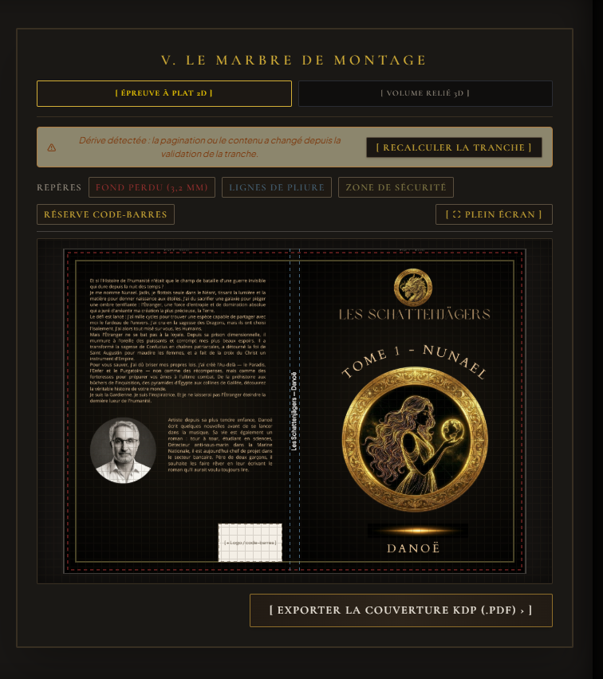
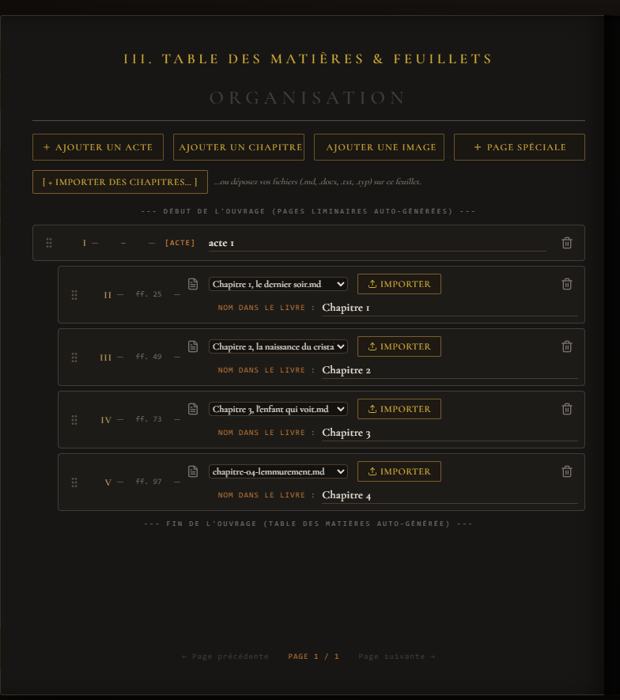

Banc I
Calibrage & Gabarits
Choisissez le format de coupe, les polices et les règles de mise en page. Les réglages s'appliquent au livre exporté, tandis que l'interface de l'atelier conserve sa présentation.
Registre public · Édition 1.2.0
Aldus réunit dans un même atelier la préparation d'un manuscrit, sa composition, sa relecture et la fabrication de ses fichiers de publication. Chaque étape se déroule sur un Banc d'atelier, du premier réglage jusqu'au tirage.

Six menus organisent le travail; les sept Bancs décrivent le parcours complet, avec certaines étapes réparties sur les deux feuillets du registre.
Choisissez le format de coupe, les polices et les règles de mise en page. Les réglages s'appliquent au livre exporté, tandis que l'interface de l'atelier conserve sa présentation.

Rassemblez le titre, la série, les auteurs et les mentions d'édition. Ces informations alimentent les pages liminaires et le justificatif d'achevé d'imprimer.

Structurez actes, chapitres, illustrations et pages spéciales, puis réordonnez-les. Les outils contrôlent pagination, cahiers et ouvertures de chapitre sur une belle page.

Examinez l'indice de qualité et les 18 règles typographiques, puis lisez le chapitre face à ses annotations. Localisez les anomalies, appliquez une suggestion ou retouchez le Markdown en direct.

Calibrez le papier et le dos, importez les plats, puis inspectez la planche à plat ou le volume relié en 3D. Les repères et alertes aident à vérifier le gabarit avant export.

Préparez le dossier de fabrication, sélectionnez une ou plusieurs formes de sortie et consultez le bilan d'intégrité avant de lancer la génération.

Relisez le justificatif, actionnez la presse et ouvrez le dossier des épreuves ou le volume composé. Le tirage clôt le parcours sans modifier le manuscrit source.
Le Cover Studio calcule la jaquette complète à partir du format de coupe, de la pagination et du type de papier choisi.
L'épaisseur du dos est estimée à partir du nombre de pages et du coefficient de papier. Le moteur de génération arrondit la pagination utilisée au nombre pair supérieur, conformément au calcul de géométrie du module couverture.
| Papier | Coefficient |
|---|---|
| Crème | 0,0635 mm / page |
| Blanc | 0,0572 mm / page |
| Couleur | 0,0596 mm / page |

Les formes peuvent être retenues séparément ou ensemble depuis l'inspection pré-presse.
Composition du manuscrit par Typst embarqué, avec format de coupe et règles de mise en page du projet.
PDF · moteur TypstLecture reflowable adaptée aux liseuses, générée par le moteur EPUB intégré.
Libellé d'interface : 3.2PDF déplié avec plats, dos calculé, fonds perdus et réserve de code-barres. Les visuels sont contrôlés selon leur résolution effective.
PDF · seuil d'inspection 300 DPIManuscrit consolidé pour la relecture éditoriale, produit par le moteur DOCX natif.
DOCX · moteur docx-rsAldus associe une interface de travail graphique à des moteurs locaux pour la composition et la fabrication des fichiers.
Enveloppe l'application de bureau et relie l'interface aux fonctions natives de fichiers et de fenêtre.
Exécute les commandes locales, les calculs de couverture et les pipelines d'export. Les erreurs sont remontées à l'interface au lieu d'être masquées.
Moteur de composition compilé dans l'application pour générer les PDF du manuscrit et de la jaquette.
React, TypeScript et Tailwind CSS organisent les pages du registre, les contrôles et les aperçus. Le redimensionnement est stabilisé par une garde dédiée et des mesures réactives.
Le registre des spécifications s'arrête ici; l'atelier, lui, reste ouvert.